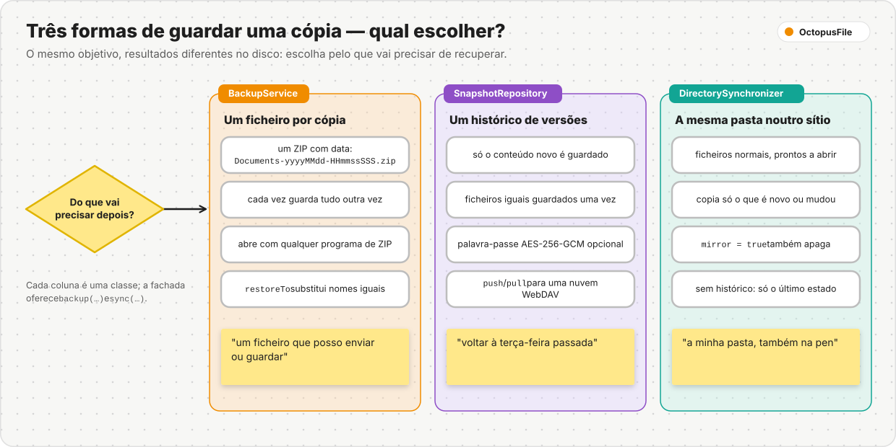
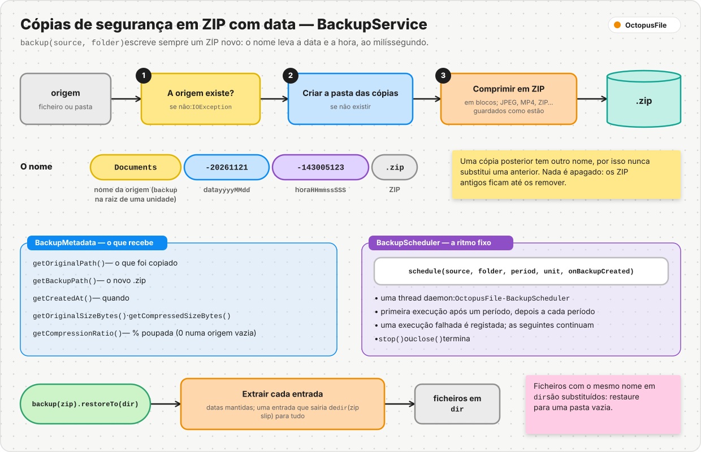
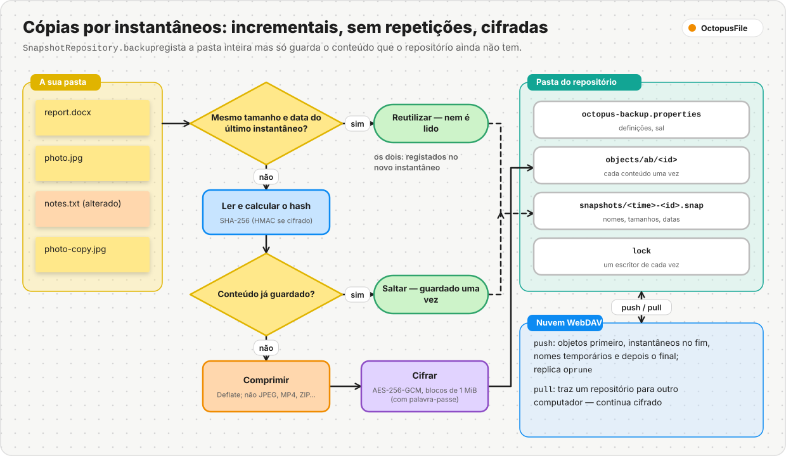
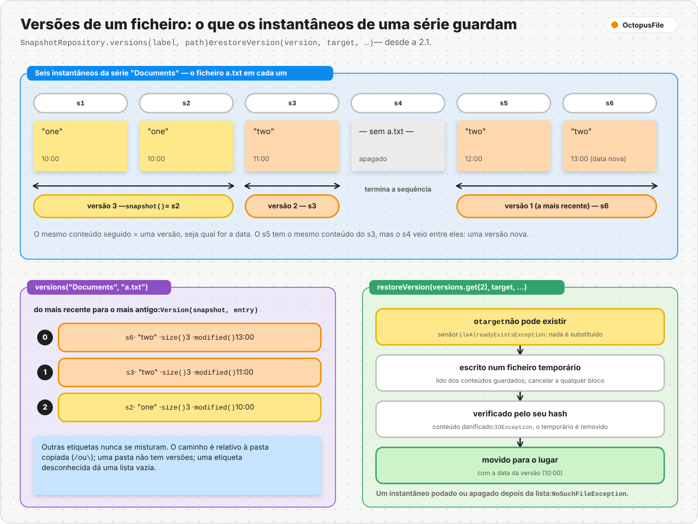
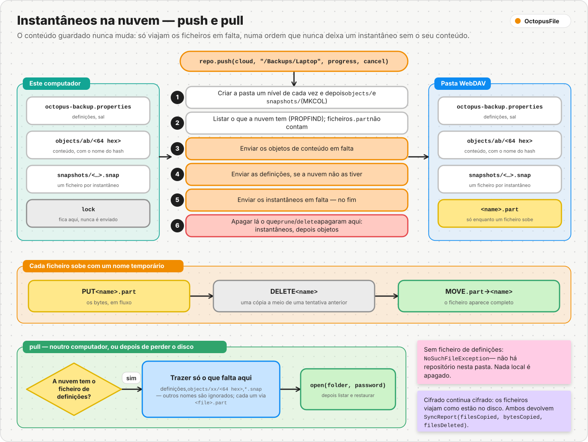
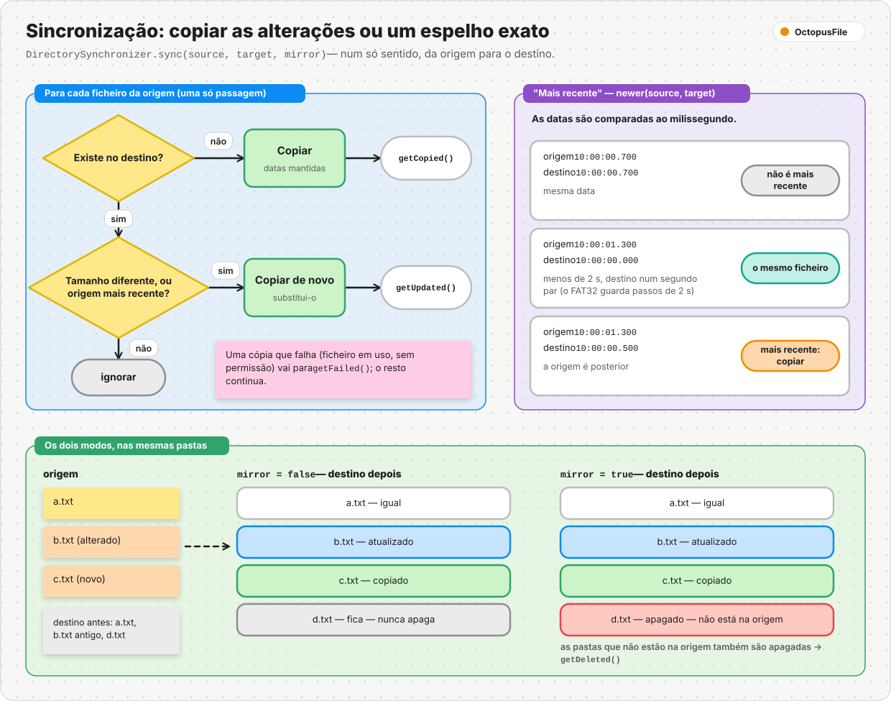

Cópia de segurança e sincronização

javaOctopusFile octo = OctopusFile.of();
BackupMetadata zip = octo.backup(docs).to(usb.resolve("zips")); // Documents-<date>.zip
SyncResult copy = octo.sync(docs, usb.resolve("Documents"), false); // only new and changed
SyncResult mirror = octo.sync(docs, usb.resolve("Documents"), true); // also removes what was deleted
Cópias de segurança — BackupService#

Um ZIP de um ficheiro ou pasta, com o nome original e uma marca temporal, de modo que uma cópia de segurança nunca substitui outra. backup(path).restoreTo(dir) extrai-a (os ficheiros com o mesmo nome em dir são substituídos). BackupScheduler executa cópias de segurança a intervalos fixos.
Pasta por omissão (desde a 2.1). backup(path).toDefault() guarda a cópia na pasta da configuração, GlobalConfiguration.getBackupDirectory() (por omissão ~/.octopusfile/backup, criada quando preciso). A pasta é lida no momento da chamada, por isso um setBackupDirectory(...) posterior é usado pela cópia seguinte:
javaocto.getGlobalConfiguration().setBackupDirectory(usb.resolve("Backups"));
BackupMetadata m = octo.backup(docs).toDefault();
Com a pasta a null, toDefault() lança OctopusFileException com INVALID_ARGUMENT; uma pasta por omissão dentro da origem é recusada, como com to(...).
Instantâneos — SnapshotRepository (desde a 1.4)#

Cópias de segurança incrementais, sem duplicados e, se quiser, cifradas. Cada backup regista a pasta inteira como um instantâneo (snapshot), mas só guarda o conteúdo que o repositório ainda não tem.
Desde a 2.0.3, as operações sobre um repositório aberto correm uma de cada vez (uma cópia e um delete de outra thread esperam uma pela outra), por isso um callback de progresso não deve esperar por outra thread que use o mesmo repositório:
javatry (SnapshotRepository repo = SnapshotRepository.create(usb.resolve("Backups"), "a long password".toCharArray())) {
SnapshotRepository.Snapshot s = repo.backup(docs, "Documents", null, null);
System.out.println(s.files() + " files, " + s.bytesAdded() + " new bytes");
repo.restore(s, restoreFolder, null, null, null); // never overwrites: the folder must be empty
repo.restore(s, photosOnly, p -> p.startsWith("Photos/"), null, null);
repo.prune(10); // keep the last 10 snapshots of each label
List<String> problems = repo.verify(null); // read everything back
}
// later: SnapshotRepository.open(usb.resolve("Backups"), password)
| Incremental | um ficheiro com o mesmo tamanho e data que no instantâneo anterior da mesma etiqueta não volta a ser lido |
| Sem duplicados | conteúdo idêntico é guardado uma só vez, entre ficheiros, pastas e instantâneos |
| Comprimido | Deflate, exceto formatos que já são comprimidos (JPEG, MP4, ZIP, DOCX…) |
| Cifrado (com palavra-passe) | AES-256-GCM em blocos autenticados de 1 MiB, chave derivada com PBKDF2-HMAC-SHA256 (310 000 iterações); os objetos guardados têm como nome um HMAC, por isso o nome não revela nada; nomes, tamanhos e datas dos ficheiros ficam em ficheiros de instantâneo cifrados |
| Seguro | tudo é escrito num ficheiro temporário e renomeado; um ficheiro de bloqueio impede dois programas de escrever ao mesmo tempo; restore recusa uma pasta que não esteja vazia; cada byte reposto é comparado com o seu hash |
| Manutenção | prune(keepPerLabel), delete(snapshot), verify(cancel), sizeOnDisk() |
Um ficheiro que não possa ser lido (em uso, sem permissão) fica em Snapshot.failed() e o resto continua. Ativar a marca cancel para uma cópia sem registar nada. Não há recuperação sem a palavra-passe.
Versões de um ficheiro (desde a 2.1)#

Para um painel de "Versões anteriores": versions(label, path) lista os conteúdos diferentes que um ficheiro teve nos instantâneos de uma série, do mais recente para o mais antigo, e restoreVersion repõe um deles num ficheiro novo, sem repor o instantâneo inteiro:
javaList<SnapshotRepository.Version> versions = repo.versions("Documents", "notes/todo.txt");
for (SnapshotRepository.Version v : versions) {
System.out.println(v.snapshot().id() + " " + v.size() + " B " + Instant.ofEpochMilli(v.modified()));
}
repo.restoreVersion(versions.get(1), desktop.resolve("todo (yesterday).txt"), null, null);
| Série | o label dado a backup (por omissão o nome da pasta); outras etiquetas nunca se misturam |
| Caminho | relativo à pasta copiada, com / (aceita-se \); uma pasta não tem versões |
| Uma por conteúdo | instantâneos seguidos com o mesmo conteúdo fazem uma versão (snapshot() é o mais recente deles); um instantâneo sem o ficheiro termina a sequência, por isso um ficheiro apagado e reposto é uma versão nova |
| Nunca substitui | o destino não pode existir (FileAlreadyExistsException); o conteúdo é escrito num ficheiro temporário, verificado pelo seu hash e depois movido para o lugar com a data da versão |
| Desaparecido | um instantâneo apagado ou podado depois de feita a lista dá NoSuchFileException |
restoreVersion(snapshot, path, target, progress, cancel) faz o mesmo para um ficheiro indicado pelo instantâneo e pelo caminho. Para progresso, pausa e cancelamento, use TransferManager.restoreVersion(repo, version, target) (transferências).
Na nuvem — push e pull (desde a 2.0)#

Um repositório pode ser copiado para uma pasta WebDAV (Nextcloud, ownCloud, um NAS…) e trazido de volta:
javaWebDavStorage cloud = new WebDavStorage("https://cloud.example.com/remote.php/dav/files/ana/", "ana", appPassword);
SnapshotRepository.SyncReport sent = repo.push(cloud, "/Backups/Laptop", null, null); // only what is missing
// on another computer, or after losing the disk:
SnapshotRepository.pull(cloud, "/Backups/Laptop", newFolder, null, null);
try (SnapshotRepository copy = SnapshotRepository.open(newFolder, password)) {
copy.restore(copy.list().get(copy.list().size() - 1), restoreFolder, null, null, null);
}
O conteúdo guardado nunca muda depois de escrito, por isso push envia só os ficheiros que a nuvem ainda não tem (primeiro o conteúdo, os instantâneos no fim, cada ficheiro com um nome temporário e depois renomeado) e apaga na nuvem o que prune ou delete apagaram aqui; pull traz só o que falta e não apaga nada localmente. Um repositório cifrado continua cifrado na nuvem. Para progresso e cancelamento, use TransferManager.pushSnapshots / pullSnapshots (transferências). Só um computador deve fazer push para uma pasta da nuvem.
Sincronização — DirectorySynchronizer#

Sincronização num só sentido, de uma pasta de origem para um destino:
| Modo | Efeito |
|---|---|
mirror = false | copia os ficheiros novos ou alterados (tamanho ou data mais recente, comparada ao milissegundo; uma origem mais recente por menos de 2 s é ignorada quando a hora do destino é um segundo par exato, como nas pens FAT32); nunca elimina |
mirror = true | o mesmo e, além disso, elimina do destino o que já não existe na origem |
SyncResult lista o que foi copiado, atualizado, eliminado e o que falhou (os ficheiros em uso ou sem permissão são ignorados; o resto continua). Para o progresso, chame plan(source, target) para saber os bytes e ficheiros a copiar e, depois, sync(source, target, mirror, (file, bytes) -> …); lançar uma exceção a partir da callback cancela a operação.
Segurança: um espelho elimina no destino. Aponte-o para uma pasta dedicada à cópia de segurança (o FileExp usa sempre <target>/FileExp Backup/<folder name>), nunca para a raiz de uma unidade. O destino nunca pode estar dentro da origem.
DocExamplesTest